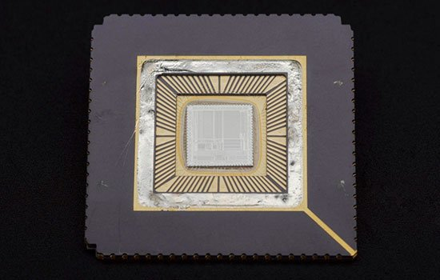

WHAT WERE MOBILES LIKE BEFORE SMARTPHONES?
The smartphone has changed the way we live, and it's hard to imagine a time when we had different devices for all the functions our phones can now fulfill.
But smartphones emerged as the dominant personal accessory and business tool from the convergence of two different products.
In the 1990s, consumers had a choice between mobile phones on which they could talk and send texts, or personal organisers to conduct business on the move.
The costs of owning a mobile phone and paying for calls had fallen dramatically as more networks entered the market, affordable pay-as-you-go contracts became available, and the phones themselves became more competitively priced.
By the end of the 1990s, teenagers were adopting them as enthusiastically as they had previously embraced other portable devices such as personal stereos. Constantly hungry for the latest version, they greeted the first phones with integral
cameras with delight.
Now they could not only take a picture, but also send it to their friends attached to a text message. Phones that could store and play music were a successful next step.
More advanced devices could connect to the internet and sync with their owners' desktop machines. Owning a PDA marked you out as a busy person who needed constant access to information.
WHAT IS THE TECHNOLOGY BEHIND
SMARTPHONES?
It took two separate technological advances to bring about the convergence of these very different devices—the development of the ARM microprocessor, and the 3G mobile network.
MICROPROCESSORS
The first was the development of the ARM microprocessor, originally designed in the early 1980s by Sophie Wilson and Steve Furber at the British company Acorn Computers. At the time
ARM stood for Acorn RISC Machines—it's now a separate company called Advanced RISC Machines.
ARM chips are important because they very efficiently feed instructions to the circuits on the microprocessor, providing abundant computing power while demanding comparatively little energy.

Most smartphones are now fitted with ARM microprocessors. The low-power processor means that impressive computing can be fitted into a package with a small battery, and smartphones have become progressively thinner and
sleeker, light enough to drop in a shirt pocket.
At the same time they have acquired an ever-increasing array of features, such as touch screens and GPS receivers, in addition to the standard cameras and music players.
3G NETWORKS
The second advance was the upgrading of mobile networks from second generation (2G) systems to the third generation (3G).
3G networks made it possible to transmit data at a rate high enough to send and receive video, making multimedia access a possibility. Today these networks have developed even further, with the arrival of 4G in 2012 and recent experiments
with 5G.
When Britain's government held an auction in April 2000 to sell licences to operate 3G networks in the UK, six companies between them paid an astonishing £22.5 billion—four times the government's estimate.
Although at first many were stunned by the huge expenditure, in the long run these companies have not regretted their purchase. Underpinned by 3G, the mobile phone became a portal to a whole world of information and entertainment, capable of
downloading text, images and video, sending emails and tweets, or browsing the web.
SMARTPHONES TAKE OFF
Apple launched the stylish, desirable iPhone 3G in 2008. It was open to anyone with the skills to add their own creations to an enticing range of apps, from games to maps to heart monitors.
Competitors quickly launched rival products, and smartphone sales took off. By the end of 2013, one in five people worldwide owned one. Suddenly smartphones were everywhere, including at
the top of the world's highest mountain.
On 19 May 2013 the British explorer Daniel Hughes appeared on BBC News, wearing a red nose in honour of the charity Comic Relief.
Using Skype on his smartphone via a satellite link, Hughes sent live video images and sound from the summit of Everest to the BBC studio, and was able to respond to questions from Nawaz about his bid to raise money for the charity.
The event illustrates just how far mobile phones have come, from simple communications devices carrying voices and small amounts of text, to tiny computers able to roam the internet and
send and receive data as complex as a live digital video.
Mobile phones, once simply tools for making voice calls, are now fully connected and versatile devices, putting all the power of a computer in your pocket.
They have transformed the way we generate, consume and share data about ourselves and the world around us.